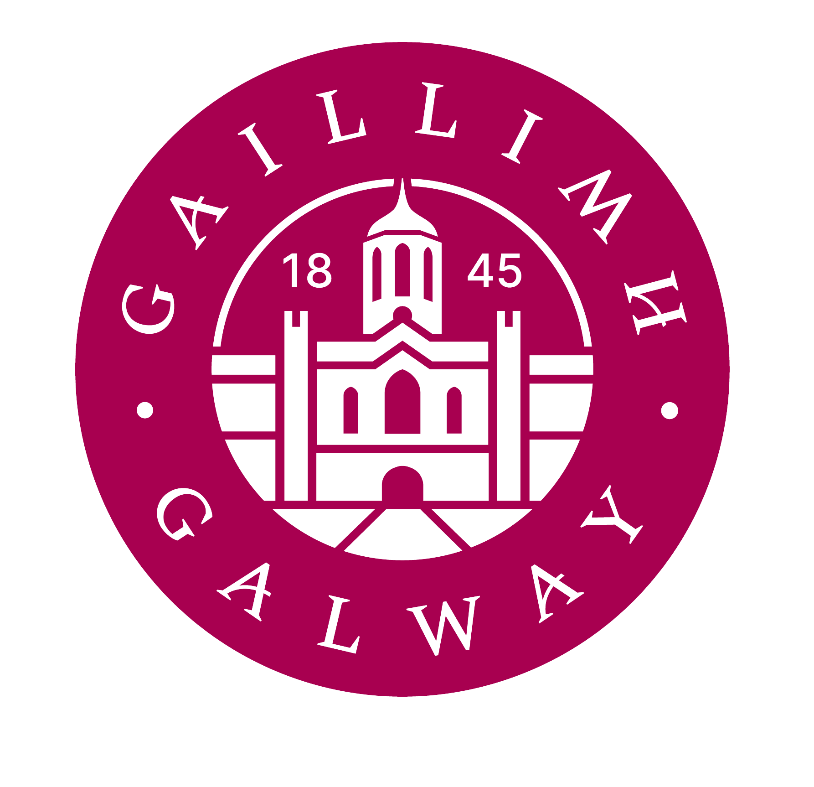
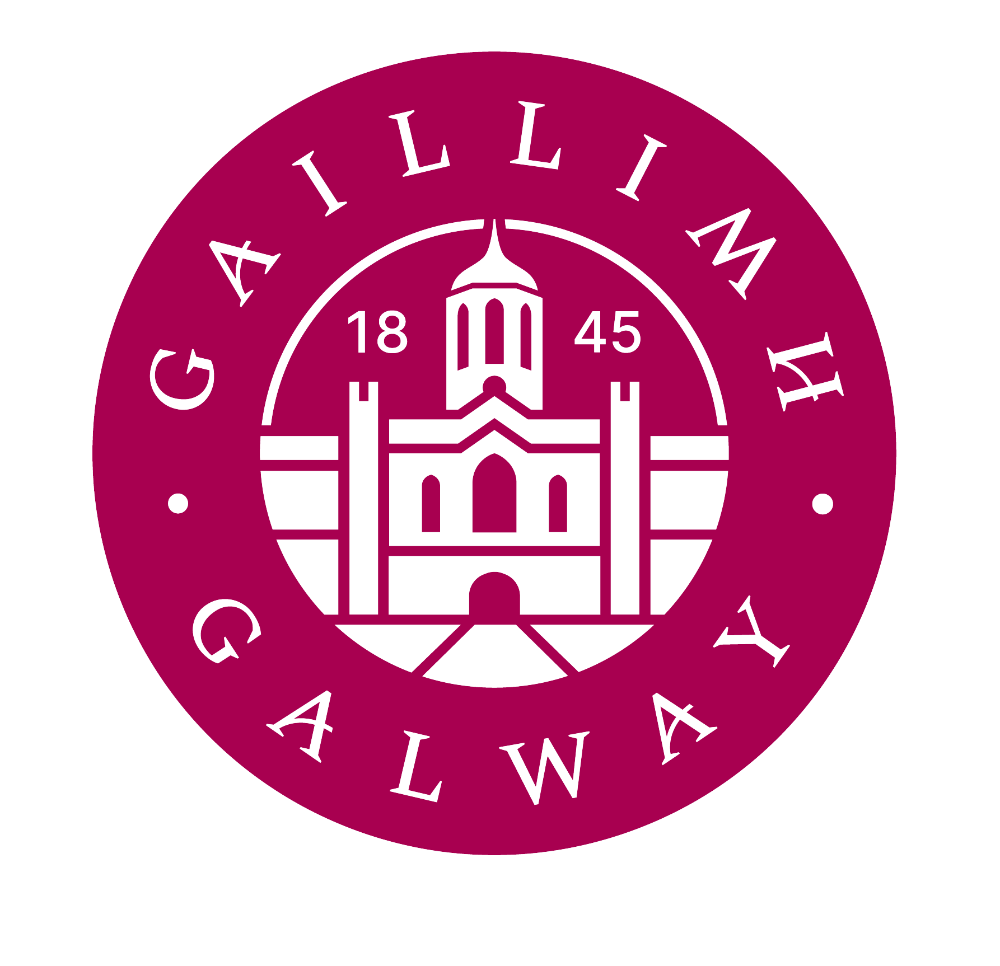

About Me
I’m Mark Roe, a third-year undergraduate studying Physics & Instrumentation at Atlantic Technological University, Galway. My academic path began at Trinity College Dublin (TCD), where I studied pure physics before transferring to ATU to focus more deeply on instrumentation and computation.
I’m currently undertaking a summer research placement at the Centre for Astronomy, University of Galway (UG), working on simulations for the Extremely Large Telescope and its MORFEO adaptive optics system.
My academic interests span theoretical physics, chaotic systems, and scientific instrumentation. I’ve built various small-scale projects, such as a prototype fridge sensor and a beam deflection analysis system using strain gauges.
This site is a space to share my work, essays, and ideas — and to document the process of becoming a physicist.

 
